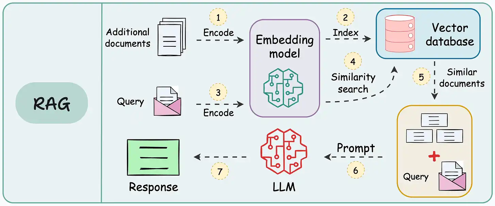
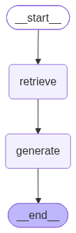

# Mount Google Drive
from google.colab import drive
drive.mount('/content/drive')Mounted at /content/drive


This lecture introduces Retrieval-Augmented Generation (RAG), a technique for grounding the responses of Large Language Models (LLMs) in external sources of information. We will first explain the main components of RAG systems, and then implement three RAG pipelines. The first is built step by step using Hugging Face libraries for embedding, retrieval, and generation, the second uses the LlamaIndex framework, and the third uses the LangGraph framework.
Retrieval-Augmented Generation (RAG) is an approach in which information relevant to a user query is retrieved from external sources and provided to an LLM as context for generating a response. The sources may include websites, local documents, company records, databases, or other documents.
In general, the internal knowledge of LLMs is static, as it is fixed by the date of the used training dataset. Therefore, LLMs cannot reliably answer questions about new events using only the learned knowledge during model training. Updating LLMs with knowledge about current events by continuously retraining the models on new data is an expensive process, as it requires collecting updated datasets and finetuning the model to update the weights. To address this problem, modern LLM-based assistants use web search and other tools to obtain current information. The retrieved information is appended to the context when answering users’ questions and allows to use new facts without retraining the model weights.
RAG involves two major phases:
Web search followed by an answer based on the retrieved results follows this retrieval-augmented generation pattern.
RAG is also useful for answering questions about private or specialized information that may not be present in a model’s training data. For example, in an enterprise setting, external sources of information for RAG can comprise various company-specific files, documents, reports, policies, and databases. Employing RAG can result in more relevant responses and it can reduce the problem of hallucination by LLMs. When source information is retained and displayed, it also allows the users to review the sources that were used by LLMs and verify the accuracy of generated responses.
Although RAG can improve relevance and reduce unsupported answers, it does not guarantee that the information is current, correct, or sufficient. RAG systems have limitations, such as retrieving irrelevant or outdated information, missing important evidence, and introducing additional processing steps and latency. Retrieved documents can also contain misleading instructions.
An overview of a RAG system is depicted in the figure.

Figure: RAG system. Source: [1].
Building a RAG system involves the following general steps:
Steps 1 to 3 prepare (index) the documents before querying. When documents are added, changed, or removed, the index must be updated. Steps 4 and 5 are performed for each query in this basic pipeline. More advanced RAG systems may retrieve information several times while answering a question.
Also, besides such basic RAG pipeline where embeddings are used to find relevant text, there are other types of RAG systems that use keyword search, web search, or hybrid retrieval that combines keyword and embedding-based search.
In the examples covered in this lecture we will work with only one document for demonstration purposes, which is split into a small collection of text chunks. For this scale, the embedding vectors can simply be stored as a list or an array in memory. However, in real-world RAG applications with many documents, there is a large number of text chunks. E.g., there may be thousands or millions of vector embeddings, and storing and searching is more challenging.
In such cases, vector embeddings are typically stored into a vector store (or vector database). It is a database designed to store and search vector embeddings that represent text, images, audio, or other data. You can think of a vector database in simple terms as an SQL database that instead of data contains high-dimensional vector embeddings. It allows to perform fast similarity search over embeddings, and returns the closest matching vectors for a query. There are many vector databases available, ranging from free open-source to commercial products, offering local and cloud-based solutions. In Section 21.4, we will use the open-source Chroma vector database.
Also, although a vector database is useful for many RAG applications, it is not a requirement for RAG, as keyword search, web search, and other retrieval methods can also provide context.
Modern frontier LLMs support context windows of one million tokens or more. When a selected collection of documents fits within the available input context, we can provide the complete text directly instead of retrieving individual chunks. For example, 20 webpages averaging 5,000 tokens each would contain about 100,000 tokens that can all fit into the context window of recent LLMs.
Long context and retrieval solve related but different problems. Retrieval finds relevant information in a larger collection, while long context allows the model to process more of that information at once. An LLM assistant can search the web, select relevant pages, and read their full text when practical. This still follows the broad RAG pattern, even without a second stage of vector-based chunk retrieval, since reading a webpage in context does not permanently add this knowledge to the model’s weights.
For a small set of documents, full-document prompting may be simpler and can avoid losing evidence during chunk retrieval. For a large collection, retrieving selected passages or documents can reduce the amount of irrelevant text and the input-processing cost. Context caching can reduce the cost of reusing a large, stable input. However, a larger context window does not guarantee that the model will correctly find and combine every relevant fact.
The best choice depends on the collection size, question type, answer quality, cost, and latency. Whole-document summaries may benefit from broad context, while a specific factual lookup may need only a few passages. Also, retrieval and long context can be combined to first retrieve relevant documents and then supply their full text.
In this section, we will implement a RAG system in Python using the Hugging Face library for model loading and response generation. The steps of the RAG pipeline are implemented from scratch, that is, we will compute the similarity scores between the query and the text chunks, and build the prompt for the LLM.
As an external text source, we will use a Wikipedia article on LLMs available at https://en.wikipedia.org/wiki/Large_language_model . The article has been pre-processed by extracting the main text content, removing sections with equations, and removing references. The cleaned text is saved in the data subfolder with this lecture in a plain text file named wikipedia_llm.txt.
Our task is to build a RAG system that allows us to answer queries about the article.
First, we will mount Google Drive and import the required libraries. Most are standard, except for sentence_transformers which is a Hugging Face library that is used to load an embedding model, and facilitate creating vector embeddings for sentences, paragraphs, or documents.
Next, we load the document wikipedia_llm.txt, which is uploaded in the course folder for Lecture 21 on my Google Drive.
# Mount Google Drive
from google.colab import drive
drive.mount('/content/drive')Mounted at /content/drive# Import libraries
import torch
import numpy as np
import pandas as pd
import re
from transformers import AutoTokenizer, AutoModelForCausalLM
from sentence_transformers import SentenceTransformer# Path to the file uploaded on Google Drive
file_path = 'drive/MyDrive/Data_Science_Course/Fall_2026/Lectures/Lecture_21-RAG/data/wikipedia_llm.txt'
# Load the text file
with open(file_path , 'r') as f:
text = f.read()# Print the text content of the article
text[:1000]'=== Introduction ===\nA large language model (LLM) is a language model trained with self-supervised machine learning on a vast amount of text, designed for natural language processing tasks, especially language generation. The largest and most capable LLMs are generative pre-trained transformers (GPTs) and provide the core capabilities of chatbots such as ChatGPT, Gemini and Claude. LLMs can be fine-tuned for specific tasks or guided by prompt engineering. These models acquire predictive power regarding syntax, semantics, and ontologies inherent in human language corpora, but they also inherit inaccuracies and biases present in the data they are trained on.\nThey consist of billions to trillions of parameters and operate as general-purpose sequence models, generating, summarizing, translating, and reasoning over text. LLMs represent a significant new technology in their ability to generalize across tasks with minimal task-specific supervision, enabling capabilities like conversational ag'To prepare the document for embedding, we will divide the text into smaller chunks so that retrieval can select passages relevant to the query. As we stated earlier, chunk size involves a tradeoff. Smaller chunks can make retrieval more focused, but may separate a statement from the context needed to interpret it. Larger chunks preserve more context, but may include unrelated information.
Chunks can be based on a token limit, such as 300 tokens, or they can follow the document structure, such as paragraphs and sections. Since this Wikipedia article is already divided into sub-sections, we will use one sub-section per chunk.
The following function chunk_by_section does exactly that, and uses the text markers == to identify top-level headers and split the text into chunks.
# Function to split text into chunks (each sub-section is one chunk)
# The code in this cell is not required in preparation for quizzes
def chunk_by_section(wiki_text):
# Find all top-level headers and their content
pattern = re.compile(r'(==\s*[^=].*?==)\s*(.*?)(?=(?:==\s*[^=].*?==)|\Z)', re.S | re.M)
matches = pattern.findall(wiki_text)
chunks = []
pending_headers = []
for header, content in matches:
if content.strip():
# If there are header-only sections, prepend them to non-empty sections
if pending_headers:
combined_header = "\n".join(pending_headers + [header])
chunk = (combined_header + content).strip()
pending_headers = []
else:
chunk = (header + content).strip()
chunks.append(chunk)
else:
pending_headers.append(header)
return chunks# Call the function to create chunks
chunks = chunk_by_section(text)Note that there are 53 text chunks in total. The first 5 chunks are displayed in the pandas DataFrame below.
# Print the number of chunks in the article
print(f"Created {len(chunks)} chunks")Created 53 chunks# Create a pandas dataframe using the chunks
df = pd.DataFrame({"chunk_id": range(len(chunks)), "text": chunks})
# Show the first 5 chunks
df.head(5)| chunk_id | text | |
|---|---|---|
| 0 | 0 | == Introduction ===\nA large language model (L... |
| 1 | 1 | == History ===\nBefore the emergence of transf... |
| 2 | 2 | == Tokenization ===\nAs machine learning algor... |
| 3 | 3 | == Byte-pair encoding ===\nAs an example, cons... |
| 4 | 4 | == Tokenization: Problems ===\nA token vocabul... |
To perform RAG, we first need to create embeddings for all text chunks. In this section, we use the Qwen3-Embedding-0.6B model. Each text chunk is passed through this embedding model, and an embedding vector was calculated for each of the 53 chunks. As we can notice, each embedding vector has 1,024 elements.
# Load the embedding model
embed_model = SentenceTransformer('Qwen/Qwen3-Embedding-0.6B')# Create embeddings for all text chunks
chunk_embeddings = embed_model.encode(chunks)# Check the shape of chunk embeddings
print(f"Shape of created embeddings: {chunk_embeddings.shape}")Shape of created embeddings: (53, 1024)The next step involves finding the most relevant chunks for a given query. We first obtain an embedding vector for the given query using the same model Qwen3-Embedding-0.6B. This results in a 1,024-dimensional embedding vector.
# A test query
query = "What is a mixture of experts"# Create a vector embedding for the query
query_embedding = embed_model.encode([query], prompt_name="query")[0]# Print the shape of the embedding
query_embedding.shape(1024,)The next cell calculates cosine similarity between the query embedding and the embedding for each chunk. As you may recall, cosine similarity for two vectors \(u\) and \(v\) is calculated as \(\dfrac{u\cdot v}{||u||\cdot ||v||}\).
# Calculate similarity between the query embedding and each chunk embedding
# cosine similarity = dot_product(u,v) / norm(u)*norm(v)
similarities = np.dot(chunk_embeddings, query_embedding)
similarities = similarities / (np.linalg.norm(chunk_embeddings, axis=1) * np.linalg.norm(query_embedding))# Print the shape of similarities
similarities.shape(53,)There are 53 similarity scores since there are 53 text chunks. By sorting the similarity scores, we found that the embeddings for chunks 12, 45, and 15, are the closest to the embedding vector for the query.
# Find the indices for the top 3 most similar chunks
top_indices = np.argsort(similarities)[-3:][::-1]
top_indicesarray([12, 24, 45])In the next cell, the top 3 text chunks are printed. We see that the first chunk has a similarity score of 0.741 and it is the most relevant to the question. Notice that the sub-section header is “Mixture of experts” and it directly relates to the posed question “What is a mixture of experts”. The second and third chunks have much lower similarity scores (0.246 and 0.244) and are less relevant.
print(f"Results\n")
for i in top_indices:
print(f"Similarity score: {similarities[i]:.3f}:\nText Chunk: {chunks[i][:1000]}")Results
Similarity score: 0.682:
Text Chunk: == Mixture of experts ===
A mixture of experts (MoE) is a machine learning architecture in which multiple specialized neural networks ("experts") work together, with a gating mechanism that routes each input to the most appropriate expert(s). Mixtures of experts can reduce inference costs, as only a fraction of the parameters are used for each input. The approach was introduced in 2017 by Google researchers.
=
Similarity score: 0.253:
Text Chunk: == Inference optimization ===
Inference optimization refers to techniques that improve LLM performance by applying additional computational resources during the inference process, rather than requiring model retraining. These approaches implement various state-of-the-art reasoning and decision-making strategies to enhance accuracy and capabilities.
OptiLLM is an OpenAI API-compatible optimizing inference proxy that implements multiple inference optimization techniques simultaneously. The system acts as a transparent proxy that can work with any LLM provider, implementing techniques such as Monte Carlo tree search (MCTS), mixture of agents (MOA), best-of-N sampling, and chain-of-thought reflection. OptiLLM demonstrates that strategic application of computational resources at inference time can substantially improve model performance across diverse tasks, achieving significant improvements on benchmarks such as the AIME 2024 mathematics competition and various coding challenges.
These in
Similarity score: 0.249:
Text Chunk: == Sycophancy and glazing ===
Sycophancy is a model's tendency to agree with, flatter, or validate a user's stated beliefs rather than to prioritize factuality or corrective information, and "glazing" is an emergent public shorthand for persistent, excessive agreeability observed across multi-turn interactions and productized assistants.
Continued sycophancy has led to the observation of getting "1-shotted", denoting instances where conversational interaction with a large language model produces a lasting change in a user's beliefs or decisions, similar to the negative effects of psychedelics, and controlled experiments show that short LLM dialogues can generate measurable opinion and confidence shifts comparable to human interlocutors.
Empirical analyses attribute part of the effect to human preference signals and preference models that reward convincingly written agreeable responses, and subsequent work has extended evaluation to multi-turn benchmarks and proposed interventions such The final step in RAG uses the results from the Retrieval phase, and performs response generation. In this section, we use Qwen3-0.6B LLM for response generation. Note that this model is different from Qwen3-Embedding-0.6B that we used for chunk embedding. Also note that the model is loaded with AutoModelForCausalLM since the task to perform is causal language modeling, i.e., predicting the next token from the preceding tokens. Loaded with the model is the corresponding tokenizer as well.
# Load Qwen3 language model and tokenizer
lm_model_name = "Qwen/Qwen3-0.6B"
tokenizer = AutoTokenizer.from_pretrained(lm_model_name)
lm_model = AutoModelForCausalLM.from_pretrained(lm_model_name, pad_token_id=tokenizer.eos_token_id)Let’s use only the top chunk to generate an answer, since it was the most relevant for the query. We assign it to the name context.
Afterward, we create a message for chat template that contains “system” and “user” roles. The system message below is quite general. The user message prepends the retrieved context (i.e., the most relevant text chunk) to the query. This ensures that LLM has access to the text chunk and uses the information when generating the answer to the query.
context = chunks[top_indices[0]]
context'== Mixture of experts ===\nA mixture of experts (MoE) is a machine learning architecture in which multiple specialized neural networks ("experts") work together, with a gating mechanism that routes each input to the most appropriate expert(s). Mixtures of experts can reduce inference costs, as only a fraction of the parameters are used for each input. The approach was introduced in 2017 by Google researchers.\n\n\n='# Create messages for chat template
messages = [{"role": "system", "content": "You are a helpful assistant answering questions."},
{"role": "user", "content": f"""Use this context: {context} to answer the following question: {query}"""}]The next cell applies the chat template for Qwen3-0.6B to the messages. Notice that the formatted prompt has the tags for instruction message start and end <|im_start|> and <|im_end|> added to the text, to match the expected format for Qwen3-0.6B.
Shown below also is the tokenized prompt with input_ids and attention_mask keys and corresponding values.
# Apply chat template to build the prompt
prompt = tokenizer.apply_chat_template(messages, tokenize=False, add_generation_prompt=True)
# Display formatted prompt
prompt'<|im_start|>system\nYou are a helpful assistant answering questions.<|im_end|>\n<|im_start|>user\nUse this context: == Mixture of experts ===\nA mixture of experts (MoE) is a machine learning architecture in which multiple specialized neural networks ("experts") work together, with a gating mechanism that routes each input to the most appropriate expert(s). Mixtures of experts can reduce inference costs, as only a fraction of the parameters are used for each input. The approach was introduced in 2017 by Google researchers.\n\n\n= to answer the following question: What is a mixture of experts<|im_end|>\n<|im_start|>assistant\n'# Tokenize the prompt
inputs = tokenizer(prompt, return_tensors="pt").to(lm_model.device)
inputs{'input_ids': tensor([[151644, 8948, 198, 2610, 525, 264, 10950, 17847, 35764,
4755, 13, 151645, 198, 151644, 872, 198, 10253, 419,
2266, 25, 621, 386, 12735, 315, 11647, 2049, 198,
32, 20980, 315, 11647, 320, 25612, 36, 8, 374,
264, 5662, 6832, 17646, 304, 892, 5248, 27076, 29728,
14155, 3489, 4580, 15546, 899, 975, 3786, 11, 448,
264, 73399, 16953, 429, 11291, 1817, 1946, 311, 279,
1429, 8311, 6203, 1141, 568, 19219, 18513, 315, 11647,
646, 7949, 44378, 7049, 11, 438, 1172, 264, 19419,
315, 279, 5029, 525, 1483, 369, 1817, 1946, 13,
576, 5486, 572, 11523, 304, 220, 17, 15, 16,
22, 553, 5085, 11811, 4192, 28, 311, 4226, 279,
2701, 3405, 25, 3555, 374, 264, 20980, 315, 11647,
151645, 198, 151644, 77091, 198]]), 'attention_mask': tensor([[1, 1, 1, 1, 1, 1, 1, 1, 1, 1, 1, 1, 1, 1, 1, 1, 1, 1, 1, 1, 1, 1, 1, 1,
1, 1, 1, 1, 1, 1, 1, 1, 1, 1, 1, 1, 1, 1, 1, 1, 1, 1, 1, 1, 1, 1, 1, 1,
1, 1, 1, 1, 1, 1, 1, 1, 1, 1, 1, 1, 1, 1, 1, 1, 1, 1, 1, 1, 1, 1, 1, 1,
1, 1, 1, 1, 1, 1, 1, 1, 1, 1, 1, 1, 1, 1, 1, 1, 1, 1, 1, 1, 1, 1, 1, 1,
1, 1, 1, 1, 1, 1, 1, 1, 1, 1, 1, 1, 1, 1, 1, 1, 1, 1, 1, 1, 1, 1, 1, 1,
1, 1]])}The tokenized prompt inputs is then passed to the model using model.generate to produce a response.
# Generate response by the model
outputs = lm_model.generate(**inputs, max_new_tokens=500, temperature=0.1, top_p=0.95, do_sample=True, pad_token_id=tokenizer.eos_token_id)# Decode generated tokens to text
response = tokenizer.decode(outputs[0], skip_special_tokens=True)The entire LLM response is shown below. It contains the system message, the user prompt with the context and query, and the model’s generated answer.
response'system\nYou are a helpful assistant answering questions.\nuser\nUse this context: == Mixture of experts ===\nA mixture of experts (MoE) is a machine learning architecture in which multiple specialized neural networks ("experts") work together, with a gating mechanism that routes each input to the most appropriate expert(s). Mixtures of experts can reduce inference costs, as only a fraction of the parameters are used for each input. The approach was introduced in 2017 by Google researchers.\n\n\n= to answer the following question: What is a mixture of experts\nassistant\n<think>\nOkay, so the user is asking, "What is a mixture of experts?" and provided some context. Let me start by reading through the context again to make sure I understand it correctly.\n\nThe context says: "A mixture of experts (MoE) is a machine learning architecture in which multiple specialized neural networks (\'experts\') work together, with a gating mechanism that routes each input to the most appropriate expert(s). Mixtures of experts can reduce inference costs, as only a fraction of the parameters are used for each input. The approach was introduced in 2017 by Google researchers."\n\nSo, the main points here are that MoE involves multiple experts working together, using a gating mechanism to select the best expert for each input. It reduces inference costs by using only a fraction of the parameters. The introduction date is 2017 by Google.\n\nNow, the user wants to know what a mixture of experts is. The answer should be based on the context. The key terms here are "mixture of experts," "MoE," "specialized neural networks," "gating mechanism," "inference costs," and "parameters."\n\nI need to structure the answer clearly. Start by stating that a mixture of experts (MoE) is an architecture where multiple specialized neural networks work together. Mention the gating mechanism and how it helps reduce parameters. Also, note the benefits like reduced inference costs and the introduction date.\n\nWait, the user might be looking for a concise answer. Let me check if there\'s any more details. The context doesn\'t mention any other specifics beyond those points. So the answer should be straightforward, combining all the key elements from the context.\n</think>\n\nA mixture of experts (MoE) is a machine learning architecture where multiple specialized neural networks (experts) work together, with a gating mechanism that selects the most appropriate expert for each input. This approach reduces inference costs by using only a fraction of the parameters for each input, as introduced by Google researchers in 2017.'Let’s extract only the text generated by the LLM. It is shown below, and it correctly answers the posed question “What is a mixture of experts”.
# Extract the LLM answer only
answer = response.split("<|im_start|>assistant")[-1].split("</think>")[-1].strip()
answer'A mixture of experts (MoE) is a machine learning architecture where multiple specialized neural networks (experts) work together, with a gating mechanism that selects the most appropriate expert for each input. This approach reduces inference costs by using only a fraction of the parameters for each input, as introduced by Google researchers in 2017.'This section uses LlamaIndex, which is a framework that facilitates LLMs integration with diverse data sources. LlamaIndex supports knowledge retrieval from over 100 data formats, including PDFs, websites, Word documents, SQL databases, and much more. Besides tools for data retrieval, LlamaIndex offers built-in functions that make RAG implementation quite simple.
For this section, we will use a single MS Word file as the external data source. The file is in fact the syllabus for the CS 4622/5622 Applied Data Science with Python course.
Let’s first install the required packages for llama_index and import the required modules.
!pip install -q llama_index llama_index_core llama-index-embeddings-huggingface llama-index-readers-file docx2txtWARNING: huggingface-hub 1.33.0 does not provide the extra 'inference'
from llama_index.embeddings.huggingface import HuggingFaceEmbedding
from llama_index.core import Settings, SimpleDirectoryReader, VectorStoreIndex
from llama_index.core.retrievers import VectorIndexRetriever
from llama_index.core.query_engine import RetrieverQueryEngine
from llama_index.core.postprocessor import SimilarityPostprocessor
from llama_index.core.node_parser import SimpleNodeParser
from llama_index.readers.file import DocxReader
from transformers import AutoModelForCausalLM, AutoTokenizerLet’s indicate the path to the directory where the syllabus document is stored. LlamaIndex offers SimpleDirectoryReader that loads and parses documents in a directory. Specifically, it finds all files in the directory, loads each file as a separate Document object, and cleans the text. In this case, we have only one document (the course syllabus) in the directory, but in a real-world case, many documents are used for building RAG applications.
# Path to the Google Drive directory where the syllabus is uploaded
file_path = 'drive/MyDrive/Data_Science_Course/Fall_2026/Lectures/Lecture_21-RAG/data/data_example2'
# Load and parse documents in the directory
documents = SimpleDirectoryReader(file_path).load_data()
print(len(documents))1The function SimpleNodeParser in LlamaIndex splits documents into text chunks, referred to here as nodes. Notice that we set the chunks to have approximately 180 tokens, and also there is an overlap of 20 tokens. I.e., the second chunk contains the last 20 tokens from the first chunk. The overlapped tokens help to capture continuity so that the information retrieval is not broken at the chunk boundary. Since this is a short document, there are only 8 chunks, and the first text chunk is shown below.
And, for this short syllabus, supplying the whole document would also be a reasonable approach. We use chunks here to demonstrate retrieval that can be applied to larger collections.
# Create parser to split the document into text chunks (nodes)
parser = SimpleNodeParser.from_defaults(chunk_size=180, chunk_overlap=20)
# Apply the parser to convert the loaded documents to chunks
nodes = parser.get_nodes_from_documents(documents)
# Print the number of chunks
print("Number of chunks:", len(nodes))Number of chunks: 8print(nodes[0].text)CS 4622/5622 Applied Data Science with Python
CS 4622/5622 – Applied Data Science with Python
Semester: Fall 2026 (August 24 – December 18)
Credit Hours: 3
Instructor: Alex Vakanski, vakanski@uidaho.edu
Office Location: TAB 311,The main difference from the implementation in the previous section is in how the embeddings are stored and searched. Instead of calculating similarity scores with NumPy, we build a VectorStoreIndex over the text chunks, and we search it through a retriever and a query engine. These LlamaIndex components embed the query, perform the similarity search, and return the most relevant chunks, so that the embedding, retrieval, and generation steps below require only a few lines of code.
In the next cell we use bge-small-en-v1.5 from Hugging Face as a model for embedding the text chunks.
The cell afterward builds a vector store from the text chunks (nodes). This involves computing an embedding vector for each text chunk using the BGE model, storing all vectors using LlamaIndex’s default in-memory storage, and assigning a retrieval index to the embeddings. This example does not configure a separate persistent vector database. For a larger application, we could connect the index to a supported vector database.
# Load the embedding model
Settings.embed_model = HuggingFaceEmbedding(model_name="BAAI/bge-small-en-v1.5")
# Don't use a default LLM yet, we will define it later
Settings.llm = NoneLLM is explicitly disabled. Using MockLLM.# Index documents using vector store
index = VectorStoreIndex(nodes)LlamaIndex offers VectorIndexRetriever which, as it sounds, creates a retriever object that uses the vector index to search for relevant chunks and retrieves the top-1 chunk based on the setting for similarity_top_k in this case. Note that while this keeps the example simple by using the top-1 chunk, some questions may require evidence from multiple chunks. Also, the highest-ranked chunk may still be irrelevant when the document does not contain an answer.
Next, a query engine is defined with RetrieverQueryEngine, that uses the retriever object to return the relevant text for the query.
# Configure retriever
retriever = VectorIndexRetriever(index=index, similarity_top_k=1)# Create a query engine
query_engine = RetrieverQueryEngine(retriever=retriever)For content generation, we will again use Qwen3-0.6B LLM, as in Section 21.2. The next cell below defines a generation pipeline with the generate_response function. The steps are almost identical to Section 21.2 above, with the exception of the first two lines that call the defined query_engine and extract the text for the most relevant text chunk.
def generate_response(query):
# Retrieve the relevant text
retrieval = query_engine.query(query)
# Extract the text for the most relevant node
context = retrieval.source_nodes[0].text
# Create messages for chat template
messages = [{"role": "system", "content": "You are a helpful assistant answering questions. Use the provided context to answer questions."},
{"role": "user", "content": f"""Based on this context: {context}, please answer the following question: {query}"""}]
# Apply chat template to build the prompt
prompt = tokenizer.apply_chat_template(messages, tokenize=False, add_generation_prompt=True)
# Tokenize the prompt
inputs = tokenizer(prompt, return_tensors="pt").to(lm_model.device)
# Generate response by the model
outputs = lm_model.generate(**inputs, max_new_tokens=500, temperature=0.1, top_p=0.95, do_sample=True, pad_token_id=tokenizer.eos_token_id)
# Decode generated tokens to text
response = tokenizer.decode(outputs[0], skip_special_tokens=True)
# Extract the LLM answer only
answer = response.split("<|im_start|>assistant")[-1].split("</think>")[-1].strip()
# Print the final answer by the LLM
print(answer)Now, we can call the generate_response function and query the model based on course information provided in the syllabus.
generate_response("What is the evaluation strategy")The evaluation strategy is the combination of assignments, quizzes, and class participation. Each component contributes to the assessment, and their total adds up to 100.generate_response("How many marks are assigned for homework assignments")The number of marks assigned for homework assignments is **45**.generate_response("What is the instructor's email address")The instructor's email address is **vakanski@uidaho.edu**.This section presents a third implementation of a RAG system using LangGraph. LangGraph is a framework developed by the LangChain team for building LLM applications as graphs. The nodes of the graph are Python functions that perform individual steps (e.g., retrieve documents, generate an answer), and the edges define the order in which the steps are executed. The nodes communicate through a shared state, which is a Python dictionary that is passed from one node to the next and updated along the way. The graph-based design makes the structure of an application explicit, and it makes it easy to add steps such as rewriting the query, re-ranking the retrieved chunks, or checking the quality of the generated answer. LangGraph is also one of the most widely used frameworks for building agents, and we will cover it again in the lecture on Agentic AI.
For data loading, text splitting, embedding, and vector storage, LangGraph relies on the components of the LangChain library. Similar to LlamaIndex, LangChain provides document loaders for many file formats, text splitters, wrappers for embedding models and LLMs, and interfaces to many vector stores.
As an external text source in this section, we will use a short plain text file library_guide.txt, which contains a visitor guide for the Maple Hollow Public Library. The library and the town are fictional, and therefore the LLM could not have learned any facts about them during training. Any correct answer to a question about the library must come from the retrieved text, which makes this document a good test case for a RAG system. We will follow the same steps as in the previous sections: data loading, splitting the text into chunks, embedding, retrieval, and generation. The retrieval and generation steps will be implemented as the two nodes of a LangGraph graph.
Let’s first install the required packages. langgraph is the graph framework, langchain-huggingface provides a wrapper for Hugging Face embedding models, langchain-text-splitters contains the text splitters, and langchain-chroma provides an interface to the Chroma vector database.
!pip install -q langgraph langchain langchain-huggingface langchain-text-splitters langchain-chromafrom typing import List, TypedDict
from langchain_text_splitters import RecursiveCharacterTextSplitter
from langchain_huggingface import HuggingFaceEmbeddings
from langchain_core.vectorstores import InMemoryVectorStore
from langchain_chroma import Chroma
from langchain_core.documents import Document
from langgraph.graph import StateGraph, START, END
from transformers import AutoModelForCausalLM, AutoTokenizer
# Note: if there is an error in loading the modules, it is most likely caused by incompatible versions of packages installed in the Google Colab environment
# You may need to restart the Google Colab session with Runtime -> Restart sessionNext, we will load the text document. LangChain represents text data as Document objects, where each Document has a page_content attribute that contains the text, and a metadata attribute that contains additional information such as the name of the source file. LangChain offers document loaders for many file formats (PDF files, web pages, CSV files, databases, etc.) that return such lists of Document objects. Since our data is a single plain text file, we simply read the file with Python’s open function and wrap the text into a Document object.
# Path to the text document uploaded on Google Drive
file_path = 'drive/MyDrive/Data_Science_Course/Fall_2026/Lectures/Lecture_21-RAG/data/library_guide.txt'
# Read the text file
with open(file_path, 'r', encoding='utf-8') as f:
text = f.read()
# Wrap the text into a list with one Document object
documents = [Document(page_content=text, metadata={"source": file_path})]
print("Number of documents:", len(documents))Number of documents: 1# Print the beginning of the document text
print(documents[0].page_content[:1000])Maple Hollow Public Library - Visitor Guide
About the Library
The Maple Hollow Public Library is a small community library located at 214 Birch Street, in the center of the town of Maple Hollow. The library was founded in 1952, when a group of local teachers donated their personal book collections to the town. Today the library holds about 38,000 books, 2,500 DVDs, and 120 board games. The library is run by a team of six librarians and about twenty volunteers. The head librarian is Ms. Rosalind Okafor, who has worked at the library since 2009.
Opening Hours
The library is open from 9 AM to 7 PM on Monday through Thursday, and from 9 AM to 5 PM on Friday. On Saturday the library is open from 10 AM to 4 PM. The library is closed on Sundays and on public holidays. During the summer months of July and August, the library closes one hour earlier on weekdays.
Library Membership
Membership in the library is free for all residents of Maple Hollow. Visitors who live outside of the town ca# Metadata of the document
documents[0].metadata{'source': 'drive/MyDrive/Data_Science_Course/Fall_2026/Lectures/Lecture_21-RAG/data/library_guide.txt'}To split the text into chunks we will use RecursiveCharacterTextSplitter, which is the recommended general-purpose text splitter in LangChain. It first tries to split the text at paragraph breaks, then at line breaks, then at sentences and words, until the chunks are smaller than the specified chunk_size. In this way, it keeps paragraphs and sentences together whenever possible. Note that chunk_size and chunk_overlap are specified in characters, rather than in tokens as in Section 21.3. Since the document consists of short sections with one paragraph each, we set the chunks to have at most 700 characters with an overlap of 100 characters between consecutive chunks. The splitter returns the chunks as a list of Document objects.
# Create a text splitter
text_splitter = RecursiveCharacterTextSplitter(chunk_size=700, chunk_overlap=100)
# Split the loaded documents into chunks
chunks = text_splitter.split_documents(documents)
print("Number of chunks:", len(chunks))Number of chunks: 8# Print the first chunk
print(chunks[0].page_content)Maple Hollow Public Library - Visitor Guide
About the Library
The Maple Hollow Public Library is a small community library located at 214 Birch Street, in the center of the town of Maple Hollow. The library was founded in 1952, when a group of local teachers donated their personal book collections to the town. Today the library holds about 38,000 books, 2,500 DVDs, and 120 board games. The library is run by a team of six librarians and about twenty volunteers. The head librarian is Ms. Rosalind Okafor, who has worked at the library since 2009.
Opening HoursWe will again use the bge-small-en-v1.5 embedding model from Hugging Face. In LangChain, Hugging Face embedding models are loaded with the HuggingFaceEmbeddings class, which internally uses the sentence_transformers library.
# Load the embedding model
embed_model = HuggingFaceEmbeddings(model_name="BAAI/bge-small-en-v1.5")The embedded chunks are stored in a vector store. LangChain supports many vector stores (e.g., Chroma, FAISS, Pinecone, Qdrant, Milvus), and all of them share the same interface, so switching from one to another requires changing only a line or two of code. To compare two options, we will store the chunks first in a simple in-memory vector store, and then in the Chroma vector database.
Option 1: In-memory vector store. InMemoryVectorStore keeps the embeddings in a Python dictionary in memory. The method add_documents computes an embedding vector for each chunk and stores it together with the text of the chunk. This is a good choice for our case with just a few chunks, however the embeddings will be lost when the Colab session ends, and each search compares the query to every stored vector, which becomes slow for collections with millions of chunks.
# Create a vector store and add the chunks to it (this step computes the embeddings)
vector_store = InMemoryVectorStore(embed_model)
ids = vector_store.add_documents(chunks)# Print the ids for the 8 stored vectors
ids['ee734f87-d817-4d6b-b9f7-61a52bf0f535',
'0e7a959f-c492-4471-a38a-4d533e305b67',
'7a7ee7bc-b5f6-499d-9595-e9e4d1110c54',
'b05592b7-f5b3-4a43-9fee-64b29a965f65',
'b5059460-4cf2-43fa-8e92-4f4f757cec14',
'10dd5ee3-1301-49f8-b127-53ccdbc98123',
'deb542c8-6a97-4ee9-a52c-270ac7af4da5',
'b680765f-96dd-46f3-8988-25db3b50703b']Option 2: Chroma vector database. Chroma is an open-source vector database that runs locally inside the notebook, and it does not require creating an account or an API key (unlike cloud-hosted vector databases such as Pinecone). Chroma stores the embeddings, the text, and the metadata of the chunks in a folder on disk specified by persist_directory, so the database can be reloaded in a later session without recomputing the embeddings. It also builds an approximate nearest neighbor index using the HNSW (Hierarchical Navigable Small World) algorithm. HNSW is commonly used for fast similarity search in other vector databases.
In the next cell, collection_name is the name of the collection of chunks in the database (e.g., one database can hold several collections), and collection_metadata sets cosine similarity as the similarity measure, since Chroma uses Euclidean distance by default. We also assign an ID to each chunk, so that if the cell is run again, Chroma updates the existing chunks instead of adding duplicate copies to the database. The cell outputs the IDs of the stored chunks.
# Create a Chroma vector database stored in the folder chroma_db
chroma_store = Chroma(
collection_name="library_guide",
embedding_function=embed_model,
persist_directory="chroma_db",
collection_metadata={"hnsw:space": "cosine"},
)# Add the chunks with unique IDs (this step computes the embeddings)
chunk_ids = [f"chunk_{i}" for i in range(len(chunks))]
chroma_store.add_documents(chunks, ids=chunk_ids)['chunk_0',
'chunk_1',
'chunk_2',
'chunk_3',
'chunk_4',
'chunk_5',
'chunk_6',
'chunk_7']We can inspect the content of the database with the method get, which returns the stored IDs, texts, and metadata, and optionally the embedding vectors.
# Number of chunks stored in the database
len(chroma_store.get()["ids"])8# Get the stored record for the first chunk, including its embedding vector
record = chroma_store.get(ids=["chunk_0"], include=["documents", "metadatas", "embeddings"])
print("Metadata:", record["metadatas"][0])
print("Embedding length:", len(record["embeddings"][0]))Metadata: {'source': 'drive/MyDrive/Data_Science_Course/Fall_2026/Lectures/Lecture_21-RAG/data/library_guide.txt'}
Embedding length: 384Because the database is saved in the chroma_db folder, it can be reloaded later by creating a Chroma object with the same collection name and folder, without adding the chunks and computing the embeddings again. Note that the Colab disk is erased when the session ends, therefore, to keep the database between sessions, persist_directory should point to a folder on Google Drive.
# Reload the saved database from disk (the embeddings are not computed again)
reloaded_store = Chroma(collection_name="library_guide", embedding_function=embed_model, persist_directory="chroma_db")
print("Number of stored chunks:", len(reloaded_store.get()["ids"]))Number of stored chunks: 8Every vector store in LangChain can be converted into a retriever with the method as_retriever. A retriever takes a query as input, embeds the query using the same embedding model, and returns the most similar chunks. The argument k=1 specifies to return only the top-1 chunk. Below we create the retriever from the Chroma database. Replacing chroma_store with vector_store creates a retriever from the in-memory vector store instead, and the rest of the code remains unchanged.
Let’s test the retriever with a query. We can check that the retrieved chunk contains the information needed for answering the query.
# Create a retriever that returns the top-1 most similar chunk
retriever = chroma_store.as_retriever(search_kwargs={"k": 1})# Test the retriever
retrieved_docs = retriever.invoke("How many items can a member borrow")
print(retrieved_docs[0].page_content)Borrowing Rules
Members can borrow up to 8 items at the same time. Books can be borrowed for three weeks, while DVDs and board games can be borrowed for one week. Members can renew a borrowed item up to two times, either online or at the front desk, as long as no other member has placed a hold on the item. New releases are marked with a green sticker, and they can be borrowed for only one week and cannot be renewed.
Late FeesFor content generation we will again use the Qwen3-0.6B LLM.
lm_model_name = "Qwen/Qwen3-0.6B"
# Load model
lm_model = AutoModelForCausalLM.from_pretrained(lm_model_name, trust_remote_code=False, device_map="cuda:0")
# Load tokenizer
tokenizer = AutoTokenizer.from_pretrained(lm_model_name, use_fast=True)Next, we define the RAG pipeline as a graph with LangGraph. This involves three steps.
1. Define the state. The state is a dictionary that holds the data shared by the nodes of the graph. We define it as a TypedDict with three keys: question is the user query, context is the list of retrieved chunks, and answer is the generated response.
# Define the state of the graph
class State(TypedDict):
question: str
context: List[Document]
answer: str2. Define the nodes. Each node is a regular Python function that receives the current state, performs one step, and returns a dictionary with the keys of the state that it updates. The retrieve node calls the retriever with the question and stores the retrieved chunks under the context key. The generate node builds the prompt from the context and the question, generates a response with the LLM, and stores it under the answer key. The code in the generate node is the same as in the generate_response function in Section 21.3, except that here the function returns the answer instead of printing it.
# Node 1: retrieve the relevant chunks for the question
def retrieve(state: State):
retrieved_docs = retriever.invoke(state["question"])
return {"context": retrieved_docs}# Node 2: generate an answer based on the retrieved chunks
def generate(state: State):
# Join the text of the retrieved chunks into a single context string
context = "\n\n".join(doc.page_content for doc in state["context"])
# Create messages for chat template
messages = [{"role": "system", "content": "You are a helpful assistant answering questions. Use the provided context to answer questions."},
{"role": "user", "content": f"""Based on this context: {context}, please answer the following question: {state['question']}"""}]
# Apply chat template to build the prompt
prompt = tokenizer.apply_chat_template(messages, tokenize=False, add_generation_prompt=True)
# Tokenize the prompt
inputs = tokenizer(prompt, return_tensors="pt").to(lm_model.device)
# Generate response by the model
outputs = lm_model.generate(**inputs, max_new_tokens=500, temperature=0.1, top_p=0.95, do_sample=True, pad_token_id=tokenizer.eos_token_id)
# Decode generated tokens to text
response = tokenizer.decode(outputs[0], skip_special_tokens=True)
# Extract the LLM answer only
answer = response.split("<|im_start|>assistant")[-1].split("</think>")[-1].strip()
return {"answer": answer}3. Define the edges and compile the graph. We create a StateGraph object with the defined state, add the two nodes, and add edges that specify the order of execution: from the special START node to retrieve, from retrieve to generate, and from generate to the special END node. Compiling the graph produces a runnable object.
# Build the graph
graph_builder = StateGraph(State)
# Add the nodes
graph_builder.add_node("retrieve", retrieve)
graph_builder.add_node("generate", generate)
# Add the edges
graph_builder.add_edge(START, "retrieve")
graph_builder.add_edge("retrieve", "generate")
graph_builder.add_edge("generate", END)
# Compile the graph
graph = graph_builder.compile()LangGraph can draw a diagram of the graph, which is useful for inspecting the structure of more complex applications. The diagram below shows the two nodes connected sequentially between the start and end nodes.
from IPython.display import Image, display
display(Image(graph.get_graph().draw_mermaid_png()))
To run the pipeline, we call graph.invoke with a dictionary containing the initial state. Only the question key is needed, since the other two keys are filled in by the nodes. The graph executes the nodes in order and returns the final state, which contains the question, the retrieved context, and the generated answer. Let’s ask several questions about the library.
# Run the graph with a question
result = graph.invoke({"question": "How many items can a member borrow"})
# The final state contains the question, the retrieved context, and the generated answer
result.keys()dict_keys(['question', 'context', 'answer'])# Print the retrieved context
print(result["context"][0].page_content)Borrowing Rules
Members can borrow up to 8 items at the same time. Books can be borrowed for three weeks, while DVDs and board games can be borrowed for one week. Members can renew a borrowed item up to two times, either online or at the front desk, as long as no other member has placed a hold on the item. New releases are marked with a green sticker, and they can be borrowed for only one week and cannot be renewed.
Late Fees# Print the generated answer
print(result["answer"])Based on the context, a member can borrow up to **8 items** at the same time.result = graph.invoke({"question": "What are the opening hours of the library on Saturday"})
print(result["answer"])The library is open from 10 AM to 4 PM on Saturday.result = graph.invoke({"question": "How much is the late fee for an overdue DVD"})
print(result["answer"])The late fee for an overdue DVD is **1 dollar per day**.The graph in this section has only two nodes connected sequentially, and it performs the same steps as the two previous implementations in the lecture. The benefits of the graph-based design become apparent for more complex RAG pipelines. For instance, we can add a node that rewrites the user query before retrieval, a node that grades the relevance of the retrieved chunks and performs a web search if none of them is relevant, or a node that checks the generated answer for hallucinations and generates a new answer if needed. Such pipelines require conditional edges, where the next node is selected based on the current state, as well as loops, and both are supported by LangGraph. We will learn more on this in the upcoming lecture on AI agents orchestration.
Evaluating a RAG system involves assessing both the retrieval of relevant information and the quality of the generated answers. The two components can fail independently, and a single end-to-end score cannot tell us which one needs to be improved. For example, if the relevant chunks are not retrieved, the answer cannot be correct regardless of the quality of the LLM. Therefore, retrieval is typically evaluated first, since retrieval metrics are inexpensive to compute and do not require generating answers.
Retrieval evaluation measures whether the retrieved text chunks contain the information needed to answer the user’s query. Common metrics include:
Precision@k and Recall@k require that the relevant chunks for each question are labeled in advance, whereas context precision and context recall are typically computed by an LLM that judges the retrieved chunks against the question and a reference answer.
Generation evaluation measures the quality of the answers produced by the LLM using the retrieved context. Common metrics include:
To evaluate a RAG system, we create a test dataset containing questions, reference answers, and the relevant document chunks. Test questions can be written manually or generated by an LLM from the document collection, although manually written questions are generally more reliable. The system generates answers to the test questions, and the results are compared against the reference information.
Since LLMs can generate correct answers using different wording, exact text matching is often insufficient. A common approach is LLM-as-a-Judge, introduced in Lecture 20, where another LLM scores the retrieved context or the generated answers based on criteria such as context recall, faithfulness, and answer correctness. LLM-based evaluation is not always reliable, and it is recommended to validate the judge against human ratings on a sample of the test questions.
Several frameworks support automated RAG evaluation, including Ragas and DeepEval. These frameworks provide implementations of retrieval and generation metrics and facilitate evaluating RAG pipelines on collections of test questions. The names and exact definitions of the metrics differ between frameworks; for instance, DeepEval refers to context precision and context recall as contextual precision and contextual recall.